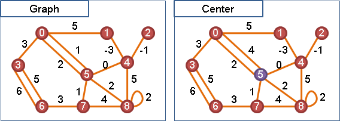
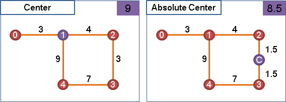
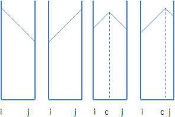
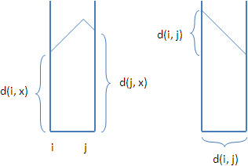
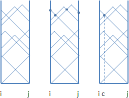
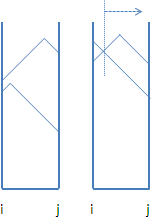
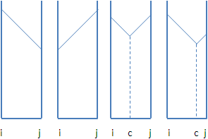
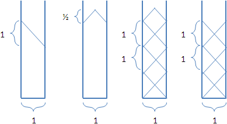
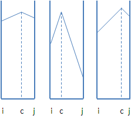

Central Vertex（Center）
center(G) = arg min eccentricity(i)
i i∊V
= arg min max d(i, j)
i i∊V j∊V
d(i, j) 為i點到j點的最短路徑
一張無向圖的「中心」是圖上的一個點，離中心最偏遠的點，其距離會最小，也就是說「中心」的偏心距會等於半徑長度。一張無向圖可能會有很多個「中心」。

中心離圖上所有點越近越好，圖上所有點離中心越近越好。是以最偏遠的點的距離來衡量遠近，而非以各點的距離總和來衡量遠近。
要找到一張無向圖的中心是很簡單的，首先算好所有兩點之間最短路徑，然後按照定義來找就可以了。
Absolute Center
absolute_center(G) = arg min eccentricity(i)
i i
= arg min max d(i, j)
i i j∊V
一張無向圖的「絕對中心」，與中心稍有不同。絕對中心不一定得是原圖上的點，它可以位於某條邊上的某處。一張無向圖可能會有很多個「絕對中心」。

要找到一張無向圖的絕對中心，方法不多。目前最快的演算法，便是下述的演算法。
演算法（Kariv-Hakimi Algorithm）
此演算法跟一般圖論問題的解題手法完全不同。首先忘掉圖論，讓我們回到高中函數。
我們先假設絕對中心在邊ij上面。接著畫出一個函數圖形：X軸是絕對中心與i點的距離（想當然X軸範圍只有0到d(i,j)），Y軸是絕對中心與圖上x點的最短距離。先隨便選一個x點。
根據絕對中心在邊ij上面的各種位置，我們都可以算出絕對中心離x點的最短距離，進而描出一條函數線。這條函數線長得什麼樣子呢？以下分為三種情況討論：
甲、絕對中心在正權重的邊上游移：
觀察絕對中心到x點的最短距離變化。絕對中心挪往邊ij的中間，絕對中心到x點的最短距離就會慢慢增加；絕對中心挪往邊ij的兩端，絕對中心到x點的最短距離就會慢慢減少。左右的坡度是相同的，也可能只有左坡或者只有右坡。


接著觀察絕對中心到圖上每一點的最短距離變化。我們可以把每一個點的函數線統統描在同一張函數圖形，每條線的坡度都是一樣的。
根據絕對中心的定義，絕對中心與最遠點的距離越小越好；對照到函數圖形，就是上方邊際線的Y軸座標越低越好。由此可知，上方邊際線的最凹處，就是絕對中心的偏心距大小；最凹處的投影位置，就是絕對中心的最佳位置。窮舉上方邊際線的所有凹處，找出最小的偏心距，就能找到絕對中心。

該如何找到上方邊際線的最凹處呢？這就要一點小技巧了。首先把每一條函數線的左端點按照高低排序，然後由最高的函數線開始，不斷與更低的函數線相交，交點即是上方邊際線的凹處。每次求得交點後，就留下原本較低的函數線，繼續與更低的函數線相交，最後就能得到所有凹處。Y軸座標最低的，就是最凹處了。

計算凹處的Y軸座標很簡單，只需要知道相交的兩條線在X軸的兩端分別有多高，就能推導出來了：
eccentricity(c)
= d(c, i) + d(i, x)
= d(c, j) + d(j, y)
= {d(i, j) + d(i, x) + d(j, y)} / 2
乙、絕對中心在負權重的邊上游移：
X軸左右兩端最高的函數線的交叉點，就是上方邊際線的最凹處。輕鬆寫意。

丙、絕對中心在零權重的邊上游移：
函數線都是水平線，最高的函數線到處都是最凹處。
最後，要找到一張無向圖的絕對中心，只需窮舉圖上所有邊，看看絕對中心在哪一條邊，再來依照方才的分析過程，取偏心距最小者即可。
一、計算所有兩點之間最短路徑。
並且紀錄起點到圖上各點的最短路徑長度順序。
二、窮舉圖上所有邊ij，找出絕對中心：
甲、正邊：i點、j點、上方邊際線所有凹處。O(V)。
乙、負邊：i側最高線與j側最高線的交叉點。O(1)。
丙、零邊：最高的水平線。O(1)。
時間複雜度
一、計算所有兩點之間最短路徑：有負邊，則以Minimum Weight T-join求解，需時O(V^4)。無負邊，則執行V次Dijkstra's Algorithm，以Fibonacci Heap實作，需時O(V * (E + VlogV))。
二、尋找絕對中心：圖的資料結構是adjacency lists，需時O(VE)。
時間複雜度取決於計算最短路徑的時間。
實作
下面提供一個簡化過的實作，假設圖上的邊都是正權重。
這段程式碼沒有特別去紀錄絕對中心的位置，各位可以試著想一下怎麼紀錄。
延伸閱讀：無權重圖的絕對中心
簡單來說，就是每一條邊的權重都是一。在這種情況下，要尋找絕對中心的位置就簡單多了，判斷方式會變得簡潔一點。

先判斷左右兩側最高點是否一樣高。
甲、如果不一樣高，上方邊際線就出來了，答案也就出來了。O(1)。
乙、如果一樣高，則需要判斷上方邊際線的凹凸。
檢查左右兩側最高點，是不是來自同一點的最短路徑長度，若是則為凸。O(V)。
計算兩點之間最短路徑，只需V次BFS，需時O(VE)。尋找絕對中心，仍需時O(VE)。整體時間複雜度可降至O(VE)。
UVa 10805
延伸閱讀：點有加權效果的絕對中心
absolute_center(G) = arg min max {d(i, j) * w(j)}
i i j∊V
令圖上的點與邊都擁有正權重，距離重新定義為最短路徑乘上端點的權重。在此狀況下，尋找絕對中心，變得要排序，需時O(VElogV)。各位可以想一想怎麼做。
